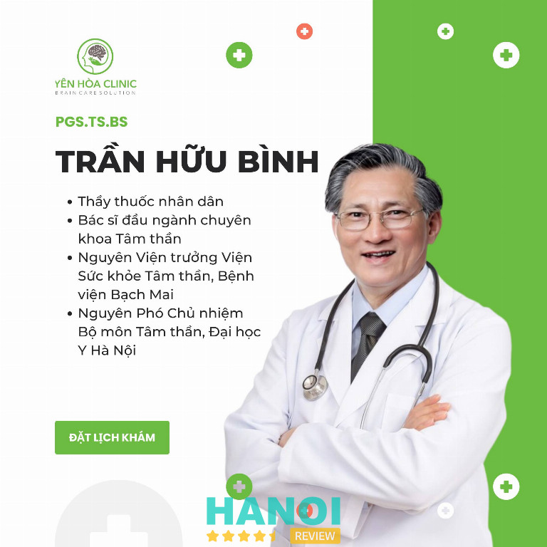
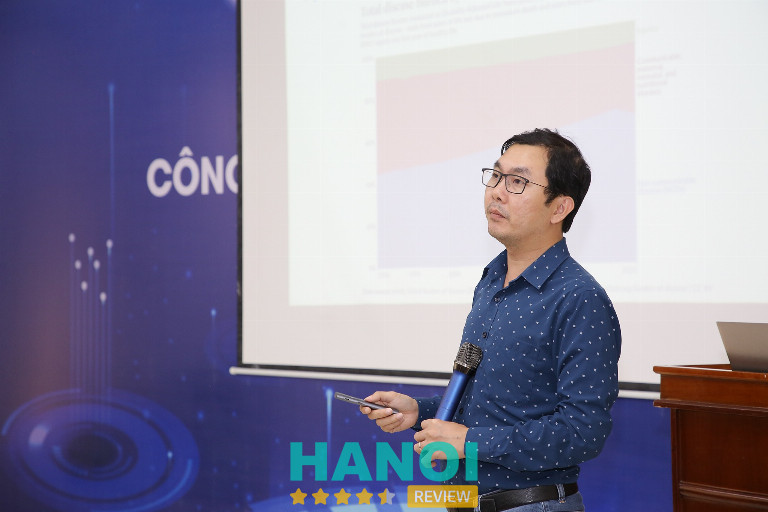

10 Chuyên gia tư vấn hỗ trợ trầm cảm giỏi ở Hà Nội nên tham khảo
Tìm kiếm chuyên gia tư vấn hỗ trợ trầm cảm giỏi ở Hà Nội là bước ngoặt quan trọng giúp bạn vượt qua những đám mây đen trong tâm trí. Một người đồng hành có tâm và tầm không chỉ thấu hiểu nỗi đau mà còn cung cấp lộ trình điều trị chuẩn y khoa. Việc kết nối đúng người sẽ giúp bạn tái tạo năng lượng sống, tìm lại niềm vui và cân bằng cảm xúc một cách bền vững giữa áp lực cuộc sống hiện đại.
Top 10 Chuyên gia tư vấn hỗ trợ trầm cảm giỏi tại Hà Nội uy tín nhất hiện nay
Việc chủ động gặp gỡ các chuyên gia tư vấn hỗ trợ trầm cảm giỏi ở Hà Nội mang lại cơ hội chữa lành tận gốc và ngăn ngừa những hệ lụy tâm lý nguy hiểm về sau.
Chuyên gia Bùi Thị Hải Yến – Tâm lý NHC
Chuyên gia Bùi Thị Hải Yến là chuyên gia tư vấn hỗ trợ trầm cảm giỏi ở Hà Nội, gắn bó với hành trình hỗ trợ đồng hành vượt qua trầm cảm cho nhiều người đang gặp vấn đề tâm lý. Trước khi sáng lập Trung tâm Tâm lý và Phát triển Con người NHC Việt Nam (Tâm lý NHC), chuyên gia tập trung hỗ trợ gỡ rối tâm lý, đồng hành với người trầm cảm theo hướng nhẹ nhàng, tôn trọng cảm xúc và nhịp độ cá nhân, giúp người tìm đến dần lấy lại sự cân bằng tinh thần.
Hiện tại, chuyên gia Bùi Thị Hải Yến đảm nhiệm vai trò Giám đốc Tâm lý NHC, đồng thời phụ trách cơ sở Yên Hòa (Hà Nội). Cách tiếp cận tập trung vào các bước giải tỏa, cân bằng, đồng hành và huấn luyện, tạo không gian an toàn để người đang có trầm cảm chia sẻ, sắp xếp lại cảm xúc và từng bước ổn định nội tâm. Môi trường hỗ trợ được xây dựng dựa trên sự lắng nghe và thấu hiểu, giúp quá trình hỗ trợ tư vấn giải quyết trầm cảm diễn ra tự nhiên, không áp lực.
Nền tảng đào tạo và chứng nhận liên quan của Bùi Thị Hải Yến:
- Chuyên ngành tâm lý
- Chứng chỉ Nhà thực hành và hỗ trợ tư vấn giải quyết vấn đề tâm lý theo Ngôn ngữ Lập trình Tư duy (ABNLP)
- Chứng chỉ Nhà thôi miên hỗ trợ gỡ rối tâm lý (American Board of Hypnotherapy)
- Chứng chỉ Nhà thực hành theo chương trình đồng hành dòng thời gian (Time Line Therapy Association)
- Chứng nhận Nghiên cứu và Ứng dụng Năng lượng Địa sinh học Reiki
- Chứng nhận Success Factor Modeling – Next Generation Entrepreneurs (Dilts Strategy Group), đào tạo trực tiếp bởi Robert Dilts
- Chứng chỉ Phương pháp giảng dạy Giá trị sống và Kỹ năng sống (ĐH Khoa học Xã hội và Nhân văn – ĐHQG TP.HCM)
Để nhận được sự đồng hành tận tâm, bạn hãy liên hệ ngay với chuyên gia Bùi Thị Hải Yến tại Trung tâm Tâm lý trị liệu NHC Việt Nam. Với kiến thức sâu rộng và trái tim nhân hậu, chuyên gia sẽ giúp bạn tháo gỡ mọi rào cản tâm lý. Đừng để nỗi đau kéo dài, hãy gọi hotline để được tư vấn lộ trình hồi phục sức khỏe tinh thần toàn diện nhất.
Thông tin liên hệ:
Trung tâm Tâm lý và Phát triển Con người NHC Việt Nam
- Địa chỉ: Số 37 Thâm Tâm, P. Yên Hòa, Hà Nội
- Điện thoại: 0965 898 008
- Email: tamlyphattriennhc@gmail.com
- Website: tamlynhc.vn
- Facebook fb.com/tamlytrilieunhc
PGS.TS Trần Hữu Bình – Phòng khám Chuyên khoa Tâm thần Yên Hòa
PGS.TS Trần Hữu Bình là chuyên gia tư vấn hỗ trợ trầm cảm giỏi ở Hà Nội, nguyên là Viện trưởng Viện Sức khỏe Tâm thần – Bệnh viện Bạch Mai. Với trình độ chuyên môn cao, bác sĩ trực tiếp thăm khám và đưa ra phác đồ điều trị cho những trường hợp gặp vấn đề về sức khỏe tâm lý, đặc biệt là các rối loạn cảm xúc phức tạp.

Việc thăm khám và tư vấn tâm lý của bác sĩ Trần Hữu Bình được thực hiện dựa trên các phương pháp khoa học hiện đại, giúp xác định rõ căn nguyên của các triệu chứng để đưa ra hướng giải quyết tối ưu.
Các mảng chuyên môn trọng tâm mà chuyên gia thực hiện:
- Chẩn đoán và phân tích chuyên sâu các dạng rối loạn trầm cảm từ nhẹ đến nặng.
- Thiết lập phác đồ tư vấn hỗ trợ tâm lý chuyên biệt cho từng khách hàng cụ thể.
- Điều trị các hội chứng liên quan đến rối loạn cảm xúc, lo âu, hoảng sợ và suy nhược thần kinh.
- Tư vấn giải pháp cải thiện giấc ngủ và điều chỉnh hành vi cho những người chịu áp lực tâm lý kéo dài.
- Hỗ trợ phục hồi tâm thế chủ động và ổn định tinh thần sau những biến cố lớn trong cuộc sống.
Đối với những ai đang tìm kiếm một địa chỉ tin cậy và chuyên gia tư vấn hỗ trợ trầm cảm giỏi ở Hà Nội, PGS.TS Trần Hữu Bình là sự lựa chọn phù hợp để nhận được sự đồng hành chuyên nghiệp. Việc liên hệ sớm với chuyên gia giúp khách hàng tiếp cận được các biện pháp can thiệp kịp thời, tránh những hệ lụy không đáng có đối với sức khỏe tinh thần.
Thông tin liên hệ:
Phòng khám Chuyên khoa Tâm thần Yên Hòa
- Địa chỉ: Lô i4 Ng. 35 P. Trần Kim Xuyến, Yên Hoà, Cầu Giấy, Hà Nội
- Điện thoại: 0983 188 689
- Email: phongkhamyenhoa@gmail.com
- Website: phongkhamyenhoa.vn
- Facebook: fb.com/100063695966536
PGS.TS Nguyễn Văn Tuấn – Bệnh viện Bạch Mai
PGS.TS Nguyễn Văn Tuấn là chuyên gia tư vấn hỗ trợ trầm cảm giỏi tại Hà Nội, được biết đến qua sự tận tâm và trình độ chuyên môn cao trong lĩnh vực sức khỏe tâm thần. PGS.TS Nguyễn Văn Tuấn hiện đang giữ các trọng trách quan trọng tại những cơ sở y tế và đào tạo đầu ngành:
- Viện trưởng Viện Sức khỏe Tâm thần – Bệnh viện Bạch Mai.
- Trưởng bộ môn Tâm thần – Trường Đại học Y Hà Nội.
- Học vị chuyên môn: Tiến sĩ Y học chuyên ngành Sức khỏe Tâm thần (đào tạo tại Viện Karolinska, Thụy Điển).
Quá trình làm việc của PGS.TS Nguyễn Văn Tuấn gắn liền với việc hỗ trợ những người đang đối mặt với các vấn đề tâm lý từ nhẹ đến phức tạp. Sự thấu hiểu và cách tiếp cận y khoa hiện đại giúp quá trình điều trị trầm cảm trở nên nhẹ nhàng, khoa học. Chuyên gia tập trung vào nhiều nhóm đối tượng và bệnh lý đa dạng:
- Trầm cảm ở mọi lứa tuổi, đặc biệt là trầm cảm ở người già và phụ nữ sau sinh.
- Các rối loạn liên quan đến stress, suy nhược thần kinh và lo âu.
- Rối loạn giấc ngủ, mất ngủ kéo dài, ác mộng hoặc mộng du.
- Các vấn đề về cảm xúc và hành vi ở trẻ em như tự kỷ, tăng động.
Để nhận sự tư vấn từ PGS.TS Nguyễn Văn Tuấn – chuyên gia hỗ trợ trầm cảm giỏi tại Hà Nội, hãy liên hệ ngay Viện Sức khỏe Tâm thần, Bệnh viện Bạch Mai. Với chuyên môn sâu từ Phó Viện trưởng và Trưởng bộ môn Tâm thần Đại học Y Hà Nội, PGS.TS Nguyễn Văn Tuấn giúp tháo gỡ khó khăn tâm lý, mang lại sự cân bằng. Đừng ngần ngại tìm kiếm sự giúp đỡ chuyên khoa để bảo vệ sức khỏe tâm thần tốt nhất.
Thông tin liên hệ:
Bệnh viện Bạch Mai
- Địa chỉ: 78 Giải Phóng, P. Kim Liên, Hà Nội
- Điện thoại: 1900 888 866
- Website: bachmai.gov.vn
- Facebook: fb.com/benhvienbachmai1911
TS Nguyễn Hữu Chiến – Bệnh viện E
TS Nguyễn Hữu Chiến là bác sĩ đang công tác tại Bệnh viện E. Với danh hiệu Thầy thuốc nhân dân, bác sĩ có quá trình làm việc lâm sàng kéo dài hơn 25 năm trong lĩnh vực y khoa. Đối với những người đang đối mặt với các triệu chứng trầm cảm tại khu vực Hà Nội, đây là một địa chỉ thăm khám đáng lưu ý.
Quá trình hoạt động và ghi nhận chuyên môn:
- Chức vụ: Nguyên Trưởng khoa Sức khỏe tâm thần – Bệnh viện E, Chủ nhiệm Bộ môn Tâm thần và Tâm lý lâm sàng – Khoa Y Dược (Đại học Quốc gia Hà Nội).
- Chuyên môn: Tâm thần học, tâm lý lâm sàng, điều trị các rối loạn liên quan đến sức khỏe tâm thần.
- Lĩnh vực quan tâm: Ông thường chia sẻ về các vấn đề tâm lý học đường, áp lực thi cử, sức khỏe tâm thần gia đình và các rối loạn tâm thần.
- Kinh nghiệm: Từng công tác tại Bệnh viện Tâm thần Trung ương 1.
Việc tìm kiếm chuyên gia tư vấn hỗ trợ trầm cảm giỏi ở Hà Nội đóng vai trò quan trọng trong quá trình hồi phục sức khỏe tinh thần. TS Nguyễn Hữu Chiến thực hiện thăm khám và tư vấn dựa trên nền tảng y học lâm sàng được tích lũy qua nhiều thập kỷ. Sự kết hợp giữa kiến thức chuyên sâu và kinh nghiệm điều trị thực tế tại bệnh viện công lập giúp quá trình chẩn đoán các trạng thái tâm lý trở nên chuẩn xác, hỗ trợ người bệnh tìm lại sự cân bằng trong cuộc sống.
Sự thấu hiểu và kinh nghiệm từ TS Nguyễn Hữu Chiến là điểm tựa cho những ai đang tìm kiếm chuyên gia tư vấn hỗ trợ trầm cảm giỏi ở Hà Nội. Hãy để Thầy thuốc nhân dân tại Bệnh viện E đồng hành cùng quá trình phục hồi sức khỏe tinh thần và tìm lại sự bình yên.
Thông tin liên hệ:
Bệnh viện E
- Địa chỉ: 89 Trần Cung, Nghĩa Tân, Cầu Giấy, Hà Nội
- Điện thoại: 1900 1548
- Email: bve1@gmail.com
- Website: benhviene.com
- Facebook: fb.com/benhviene.89trancung
ThS.BS Nguyễn Văn Phi – Bệnh viện Lão khoa Trung ương
ThS.BS Nguyễn Văn Phi là Giảng viên tại Đại học Y Hà Nội và hiện đang công tác chuyên môn tại Bệnh viện Lão khoa Trung ương. Bác sĩ tập trung vào lĩnh vực sức khỏe tâm thần, đặc biệt là hỗ trợ những người gặp phải các triệu chứng của bệnh trầm cảm.

Quá trình thăm khám tập trung vào việc lắng nghe và phân tích các biểu hiện tâm lý của người bệnh. Thái độ làm việc được ghi nhận qua sự điềm tĩnh, tạo không gian để người bệnh chia sẻ về những áp lực và biến cố trong cuộc sống. Phương pháp tiếp cận kết hợp giữa kiến thức y khoa hiện đại và sự thấu hiểu tâm lý, giúp người bệnh giải tỏa bớt căng thẳng trong quá trình trị liệu.
Các lĩnh vực hỗ trợ chính của bác sĩ:
Việc điều trị hướng tới mục tiêu phục hồi sức khỏe tinh thần và cải thiện chất lượng cuộc sống cho người bệnh thông qua các danh mục cụ thể:
- Điều trị trầm cảm: Can thiệp cho các trường hợp trầm cảm từ nhẹ đến nặng, trầm cảm sau sinh và trầm cảm ở người cao tuổi.
- Hỗ trợ tâm lý: Tư vấn các liệu pháp hành vi để kiểm soát cảm giác tiêu cực và mất ngủ kéo dài.
- Xử lý rối loạn lo âu: Giải quyết các tình trạng hoảng sợ, hồi hộp và các triệu chứng thực thể do tâm lý gây ra.
- Phục hồi chức năng tâm thần: Theo dõi sát sao tiến độ để điều chỉnh phác đồ phù hợp, hướng tới hiệu quả điều trị ổn định.
Để nhận hỗ trợ về trầm cảm, thân chủ có thể đến Bệnh viện Lão khoa Trung ương gặp ThS.BS Nguyễn Văn Phi. Với chuyên môn từ Đại học Y Hà Nội, bác sĩ trực tiếp tư vấn, lắng nghe và đưa ra phác đồ điều trị phù hợp cho từng tình trạng tâm lý. Hãy chủ động liên hệ đặt lịch khám ngay để sớm cải thiện sức khỏe tinh thần và lấy lại sự cân bằng trong cuộc sống hàng ngày.
Bệnh viện Lão khoa Trung ương
- Địa chỉ: 1A Phương Mai, Kim Liên, Hà Nội
- Điện thoại: 024 3576 4558
- Email: benhvienlaokhoa.bvlktw@gmail.com
- Website: benhvienlaokhoa.vn
- Facebook: fb.com/www.benhvienlaokhoa.vn
TS Nguyễn Thị Thu Hiền – Trung tâm Tư vấn – Trị liệu tâm lý SHARE
Tiến sĩ Nguyễn Thị Thu Hiền là chuyên gia tâm lý lâm sàng tại Hà Nội với sự am hiểu sâu sắc về các rối loạn tâm lý, đặc biệt là trầm cảm và lo âu. Với nền tảng đào tạo bài bản từ Đại học Sư phạm Hà Nội, TS Hiền tập trung vào việc hỗ trợ đối tượng trẻ em, vị thành niên và sinh viên thông qua các hoạt động tham vấn, trị liệu chuyên sâu.
TS Nguyễn Thị Thu Hiền thực hiện các hoạt động chuyên môn đa dạng nhằm hỗ trợ sức khỏe tinh thần:
- Lĩnh vực chuyên sâu: Trị liệu tâm lý, xử lý các rối loạn hành vi, rối loạn lo âu và trầm cảm.
- Hoạt động cộng đồng: Tổ chức và dẫn dắt các buổi hội thảo, webinar về nhận diện, can thiệp trầm cảm.
- Đơn vị công tác: Chuyên gia tư vấn tại Trung tâm Tư vấn – Trị liệu tâm lý SHARE.
- Thời gian công tác: Hoạt động trong lĩnh vực sức khỏe tinh thần hơn 18 năm.
Cách tiếp cận của TS Nguyễn Thị Thu Hiền nhấn mạnh vào việc giải tỏa áp lực tâm lý cá nhân. Quan điểm chủ đạo là con người không cần đạt đến sự hoàn hảo để nhận được sự yêu thích hay chấp nhận từ xung quanh. Trong quá trình tham vấn, TS Hiền chú trọng vào việc giúp cá nhân giảm bớt sự ảnh hưởng từ áp lực so sánh trên mạng xã hội, tạo không gian để chấp nhận bản thân một cách chân thực hơn.
Liên hệ ngay với Tiến sĩ Nguyễn Thị Thu Hiền để nhận sự hỗ trợ kịp thời về tâm lý. Sự thấu hiểu và lộ trình trị liệu chuyên biệt sẽ giúp vượt qua trầm cảm, lo âu hiệu quả. Đừng ngần ngại kết nối để chăm sóc sức khỏe tinh thần và tìm lại sự cân bằng.
Thông tin liên hệ:
Trung tâm Tư vấn – Trị liệu tâm lý SHARE
- Địa chỉ: Số 9, ngõ 69 Nguyễn Hy Quang, Ô Chợ Dừa, Đống Đa, Hà Nội
- Điện thoại: 024 2211 6989
- Email: share@sharevn.org
- Website: tuvantamly.com.vn
- Facebook: fb.com/tuvantamly
Thạc sĩ Nguyễn Viết Chung – Bệnh viện E
ThS.BS Nguyễn Viết Chung là bác sĩ chuyên khoa Tâm thần, sở hữu chuyên môn trong việc thăm khám và điều trị các vấn đề sức khỏe tinh thần. Bác sĩ thực hiện tiếp nhận và tư vấn cho nhiều nhóm đối tượng, từ trẻ em đang trong giai đoạn phát triển tâm lý, người trưởng thành gặp áp lực cuộc sống cho đến người cao tuổi.
Các thế mạnh chuyên sâu của bác sĩ:
- Rối loạn lo âu: Trị liệu các triệu chứng lo âu lan tỏa, rối loạn hoảng sợ, sợ hãi xã hội và các biểu hiện thể chất do lo âu gây ra.
- Trầm cảm: Can thiệp các trạng thái suy giảm khí sắc, mất ngủ, chán ăn, cảm giác tội lỗi hoặc các rối loạn cảm xúc kéo dài ở mọi độ tuổi.
- Stress (Căng thẳng): Hỗ trợ kiểm soát áp lực tâm lý từ môi trường học tập, công sở và các biến cố trong mối quan hệ gia đình.
- Rối loạn tâm lý đa độ tuổi: Thăm khám các vấn đề đặc thù như rối loạn hành vi ở trẻ em hoặc tình trạng sa sút trí tuệ, rối loạn giấc ngủ ở người già.
Bác sĩ Nguyễn Viết Chung thực hiện đánh giá tình trạng sức khỏe tâm thần dựa trên các biểu hiện lâm sàng để đưa ra phương hướng điều trị phù hợp cho từng cá nhân. Việc tìm gặp bác sĩ chuyên khoa giúp người bệnh sớm nhận diện các bất ổn tinh thần và tiếp cận với các phương pháp y khoa chuyên sâu.
Người có nhu cầu tư vấn hoặc điều trị các vấn đề về lo âu, trầm cảm và stress có thể liên hệ trực tiếp để đặt lịch hẹn thăm khám với ThS.BS Nguyễn Viết Chung.
Thông tin liên hệ:
Bệnh viện E
- Địa chỉ: 89 Trần Cung, Nghĩa Tân, Cầu Giấy, Hà Nội
- Điện thoại: 1900 1548
- Email: bve1@gmail.com
- Website: benhviene.com
- Facebook: fb.com/benhviene.89trancung
BSCKII Đặng Đình Hòe – Bệnh Viện Hồng Ngọc Yên Ninh
BSCKII Đặng Đình Hòe là chuyên gia hàng đầu trong lĩnh vực chẩn đoán và điều trị chuyên sâu các vấn đề sức khỏe tâm thần. Với bề dày kinh nghiệm lâm sàng, bác sĩ tập trung tối ưu hóa lộ trình điều trị cho những ca bệnh có diễn biến phức tạp, dai dẳng hoặc đã thất bại với các phương pháp thông thường.
Quá trình làm việc của Bác sĩ Hòe đặt trọng tâm vào việc nhận diện chính xác nguyên nhân gốc rễ, từ đó thiết kế phác đồ cá nhân hóa cho từng bệnh nhân. Các nhóm bệnh lý chuyên sâu thường xuyên được tiếp nhận bao gồm:
- Trầm cảm nặng & Trầm cảm kháng trị: Xử lý các trạng thái suy giảm cảm xúc sâu sắc, mất động lực và những trường hợp không đáp ứng với phác đồ điều trị cũ.
- Rối loạn giấc ngủ mạn tính: Điều trị mất ngủ kinh niên, rối loạn nhịp sinh học và phục hồi hệ thần kinh do hệ lụy từ việc thiếu ngủ kéo dài.
- Lo âu & Tâm thần phân liệt: Kiểm soát các hội chứng tâm lý phức tạp, rối loạn hoảng sợ, ám ảnh và các trạng thái tâm thần phân liệt giai đoạn khó.
Sức khỏe tâm thần không chỉ là sự vắng bóng của bệnh tật, mà là nền tảng cốt lõi để bạn tận hưởng cuộc sống trọn vẹn. Những cơn mất ngủ kéo dài hay trạng thái u uất không chỉ là cảm xúc nhất thời, chúng là những tín hiệu cầu cứu từ hệ thần kinh cần được lắng nghe và can thiệp kịp thời bởi những chuyên gia có chuyên môn vững vàng.
Đừng để những rào cản tâm lý hay nỗi sợ hãi ngăn bước bạn tìm lại chính mình. Với sự thấu cảm sâu sắc và phác đồ y khoa hiện đại, BSCKII Đặng Đình Hòe sẽ đồng hành cùng bạn trên hành trình chữa lành, giúp bạn thoát khỏi “vòng xoáy” của sự bế tắc để tìm lại sự bình yên và cân bằng trong tâm hồn.
Thông tin liên hệ:
Bệnh Viện Hồng Ngọc Yên Ninh
- Địa chỉ: 55 P. Yên Ninh, Quán Thánh, Ba Đình, Hà Nội
- Điện thoại: 024 3927 5568
- Email: info@hongngochospital.vn
- Website: hongngochospital.vn
- Facebook: fb.com/BenhvienHongNgoc
TS.BS Trần Thị Hà An – Bệnh viện Bạch Mai
TS.BS Trần Thị Hà An hiện đảm nhận vai trò Phó Viện trưởng Viện Sức khỏe Tâm thần thuộc Bệnh viện Bạch Mai. Với trình độ chuyên môn Tiến sĩ Y học, bác sĩ được đánh giá là một trong những chuyên gia tư vấn hỗ trợ trầm cảm giỏi ở Hà Nội, chuyên thực hiện chẩn đoán và xây dựng phác đồ điều trị cho các trường hợp gặp vấn đề về tâm lý, tâm thần từ lứa tuổi nhi khoa (từ 6 tuổi trở lên) đến người cao tuổi.

Các lĩnh vực mà bác sĩ tập trung hỗ trợ người bệnh:
- Trị liệu chuyên sâu các giai đoạn của bệnh trầm cảm và rối loạn cảm xúc.
- Chẩn đoán nguyên nhân và điều trị các dạng rối loạn giấc ngủ, mất ngủ kéo dài.
- Thăm khám rối loạn hành vi và cảm xúc ở trẻ em từ 6 tuổi trở lên.
- Điều trị suy giảm nhận thức, sa sút trí tuệ và rối loạn tâm thần ở người cao tuổi.
- Tư vấn và xử lý các rối loạn liên quan đến stress, lo âu và căng thẳng kéo dài.
Để nhận được sự hỗ trợ trực tiếp từ chuyên gia tư vấn hỗ trợ trầm cảm giỏi ở Hà Nội, thân chủ có thể đến Viện Sức khỏe Tâm thần – Bệnh viện Bạch Mai trong giờ hành chính.
Ngoài ra, TS.BS Trần Thị Hà An còn thực hiện thăm khám ngoài giờ tại Phòng khám Hà An. Thân chủ có nhu cầu nên chủ động liên hệ đặt lịch trước hoặc đến sớm tại các địa chỉ công tác nêu trên để được sắp xếp thời gian thăm khám phù hợp, giúp quá trình chẩn đoán và điều trị đạt hiệu quả tối ưu.
Thông tin liên hệ:
Bệnh viện Bạch Mai
- Địa chỉ: 78 Giải Phóng, P. Kim Liên, Hà Nội
- Điện thoại: 1900 888 866
- Website: bachmai.gov.vn
- Facebook: fb.com/benhvienbachmai1911
ThS.BS. Đinh Hữu Uân – Phòng khám Chuyên khoa Tâm thân BS Uân
ThS.BS Đinh Hữu Uân là chuyên gia tư vấn hỗ trợ trầm cảm giỏi ở Hà Nội, sở hữu nền tảng chuyên môn sâu rộng trong lĩnh vực sức khỏe tâm thần. Bác sĩ từng được Bộ Y tế bổ nhiệm bác sĩ chính vào năm 2015 và giữ các vai trò quan trọng trong hệ thống y tế công lập cũng như giáo dục.
Chuyên môn và quá trình công tác:
- International Fellow – Thành viên Hiệp hội Tâm thần Mỹ (APA).
- Nguyên Trưởng phòng Trung tâm Bệnh viện Tâm thần Trung ương 1.
- Phụ trách Bộ môn Tâm thần – Khoa Y, Trường Đại học Kinh doanh và Công nghệ Hà Nội.
- Viện trưởng Viện Sức khỏe Tâm thần Phương Đông.
- Giám đốc Phòng khám Tâm thần bác sĩ Uân.
Thân chủ có thể tiếp cận dịch vụ thăm khám trực tiếp tại phòng khám riêng do bác sĩ điều hành. Tại đây, ThS.BS Đinh Hữu Uân thực hiện tư vấn và hỗ trợ chuyên sâu các vấn đề về rối loạn tâm lý, tâm thần. Các tình trạng như trầm cảm nặng và rối loạn lo âu được chẩn đoán, can thiệp dựa trên các tiêu chuẩn lâm sàng quốc tế.
Vượt qua trầm cảm không chỉ cần ý chí, mà cần một phác đồ khoa học. ThS.BS Đinh Hữu Uân là địa chỉ tin cậy giúp hàng ngàn bệnh nhân tại Hà Nội thoát khỏi rối loạn lo âu và trầm cảm dai dẳng. Đừng để nỗi buồn làm mờ đi tương lai của bạn. Hãy chủ động kết nối với chuyên gia để được chẩn đoán chính xác và hỗ trợ kịp thời.
Thông tin liên hệ:
Phòng khám Chuyên khoa Tâm thân BS Uân
- Địa chỉ: Shop 09, Tầng 1 Tòa nhà Park 12, Times City, Minh Khai, Hai Bà Trưng, Hà Nội
- Điện thoại: 0913 511 475
- Email: Bsuan71@gmail.com
- Website: phongkhamtamthan.net
Tiêu chí chọn chuyên gia tư vấn hỗ trợ trầm cảm giỏi ở Hà Nội
Lựa chọn đúng người hỗ trợ giúp bạn tiết kiệm thời gian, công sức và nhanh chóng tìm lại sự bình yên trong tâm hồn sau những biến cố mệt mỏi.
- Bằng cấp chuyên môn: Chuyên gia cần có bằng cử nhân, thạc sĩ hoặc tiến sĩ chuyên ngành tâm lý lâm sàng tại các trường đại học uy tín trong và ngoài nước.
- Kinh nghiệm thực chiến: Người tư vấn phải có nhiều năm công tác tại các bệnh viện lớn hoặc trung tâm trị liệu uy tín, trực tiếp xử lý nhiều ca khó.
- Chứng chỉ hành nghề: Đây là yêu cầu bắt buộc để đảm bảo chuyên gia đủ điều kiện pháp lý và năng lực chuyên môn trong việc can thiệp tâm lý lâm sàng.
- Kỹ năng lắng nghe: Sự thấu cảm và không phán xét là yếu tố then chốt giúp khách hàng cởi mở lòng mình, từ đó tìm ra nút thắt của vấn đề.
- Phương pháp hỗ trợ: Sử dụng đa dạng các liệu pháp như nhận thức hành vi (CBT) hoặc trị liệu gia đình để phù hợp với từng tình trạng bệnh lý cụ thể.
- Đạo đức nghề nghiệp: Luôn bảo mật thông tin tuyệt đối và đặt lợi ích, sức khỏe tinh thần của thân chủ lên hàng đầu trong suốt quá trình đồng hành trị liệu.
- Phản hồi từ khách hàng: Những đánh giá tích cực từ người đi trước là minh chứng khách quan nhất cho năng lực và thái độ làm việc của vị chuyên gia đó.
Chuyên gia tư vấn hỗ trợ trầm cảm giỏi ở Hà Nội mang lại giá trị thiết thực cho hành trình phục hồi tinh thần. Việc cân nhắc đúng tiêu chí giúp tăng hiệu quả hỗ trợ, tạo cảm giác an toàn và đồng hành lâu dài. Chủ động tìm hiểu, kết nối phù hợp sẽ mở ra cơ hội cải thiện cảm xúc, bền vững cho tương lai.
Có thể bạn quan tâm
- 10 Chuyên gia tâm lý trẻ em ở Hà Nội uy tín, giàu kinh nghiệm
- 10 Chuyên gia tâm lý ở Hà Nội uy tín giúp bạn lấy lại cân bằng cuộc sống
- 5 Trung tâm tư vấn tâm lý học đường tại Hà Nội uy tín, chất lượng
- 10 Địa chỉ trị liệu trầm cảm tại Hà Nội uy tín, hiệu quả, chuyên nghiệp
DOANH NGHIỆP: Đăng tải thông tin MIỄN PHÍ.
Tin đọc nhiều


3 Trung tâm can thiệp trẻ tự kỷ tại quận Cầu Giấy tốt nhất
Các trung tâm can thiệp trẻ tự kỷ tại quận Cầu Giấy được nhiều phụ huynh tín nhiệm vì có uy tín nhiều năm, đội...

3 Trung tâm can thiệp trẻ tăng động giảm chú ý tại Cầu Giấy uy...
Quá trình tìm kiếm những trung tâm can thiệp trẻ tăng động giảm chú ý tại Cầu Giấy của nhiều bậc phụ huynh dường như...
5 Chuyên gia tư vấn chuyện ngoại tình ở Hà Nội mang lại giải pháp...
Việc tìm kiếm một chuyên gia tư vấn chuyện ngoại tình ở Hà Nội uy tín là bước ngoặt quan trọng giúp bạn vượt qua...
5 Địa chỉ tư vấn tiền hôn nhân ở Hà Nội giúp bạn giữ lửa...
Việc tìm kiếm một địa chỉ tư vấn tiền hôn nhân ở Hà Nội uy tín là bước chuẩn bị quan trọng cho cuộc sống...

Trở thành người đầu tiên bình luận cho bài viết này!